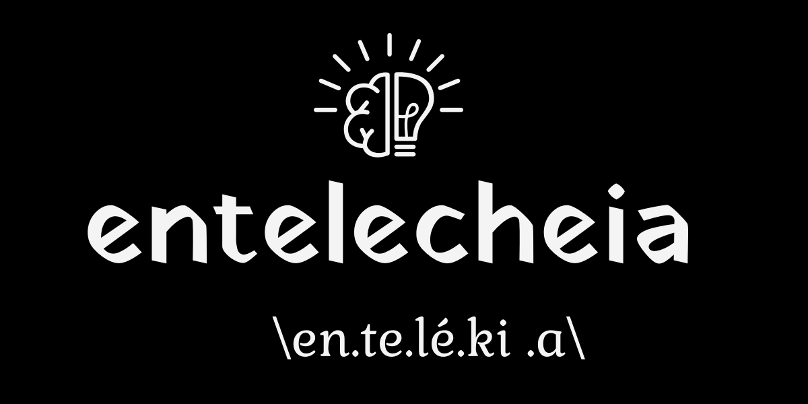

Skip to main content
Ctrl
+
K

Course
Introduction to NLP
Introduction
Getting started with ekorpkit
Research Applications
Language Models
Topic Modeling
Topic Models
Topic Coherence Measures
Sentiment Analysis
Tokenization
Word Segmentation and Association
Vector Semantics and Representation
Word Embeddings
Lab 1: Preparing Wikipedia Corpora
Lab 2: EDA on Corpora
Deep Learning for NLP
Introduction
Getting started with ekorpkit
Zero Shot, Prompt, and Search Strategies
Reinforcement Learning with Human Feedback (RLHF)
Transformers
T5: Text-To-Text Transfer Transformer
Tokenization
SentencePiece Tokenizer
ByT5: Towards a token-free future with pre-trained byte-to-byte models
Pretrained Language Models
Lab 1: Preparing Wikipedia Corpora
Lab 3: Training Tokenizers
Lab 4: Pretraining Language Models
Advances in AI and NLP
AI Art (Generative AI)
Introduction
Project Themes - A Brave New World
Robot Drawing Systems
DALL·E 1
DALL·E 2
Imagen
Textual Inversion (Dreambooth)
Automatic Speech Recognition (Whisper)
Text to Music
Image to Music
Machine Learning Systems Design
Introduction to MLOps
DevOps
Development Environment
Dotfiles
Data Science for Economics and Finance
About
entelecheia.me
Bibliography
Search
Error
Please activate JavaScript to enable the search functionality.
Ctrl
+
K